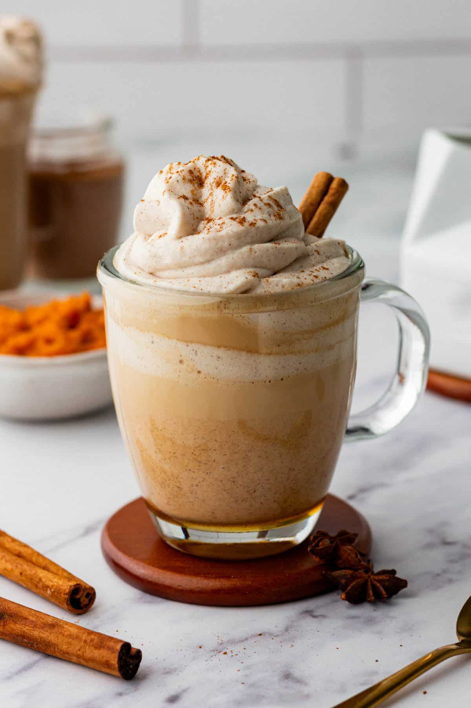
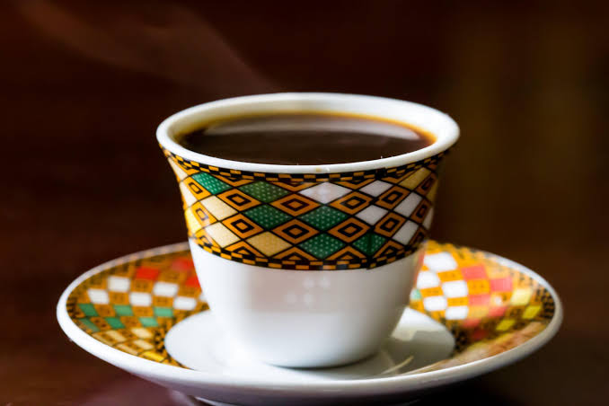
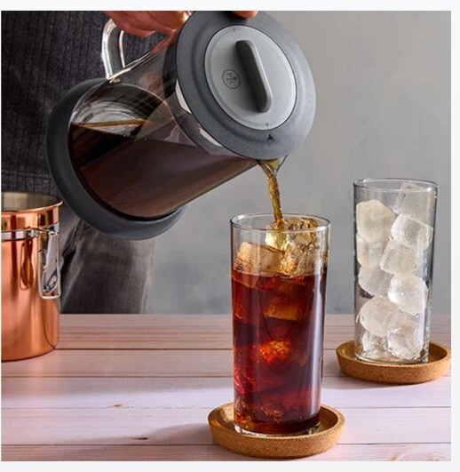
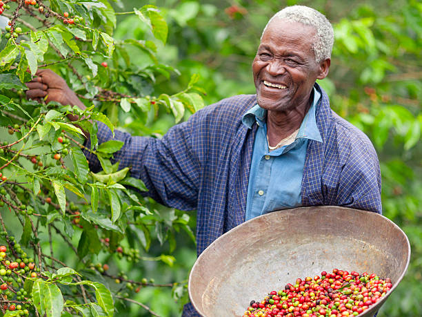

Autumn Blend: Pumpkin Spice Latte
Rich espresso blended with autumn spices and steamed milk.
$6.50
Rich espresso blended with autumn spices and steamed milk.
$6.50
Bright acidity with distinct floral and blueberry notes.
$22.00 / bag
Steeped for 24 hours for a smooth, naturally sweet finish.
$35.00
We partner directly with independent farmers who practice sustainable, ethical agriculture. Every batch is carefully roasted to highlight its unique regional flavors.
Find our flagship cafes nestled in the heart of the Pacific Northwest. Enjoy fresh pours, pastries, and a cozy atmosphere.
Mon–Fri: 6:00 AM – 7:30 PM
Sat–Sun: 7:00 AM – 6:00 PM